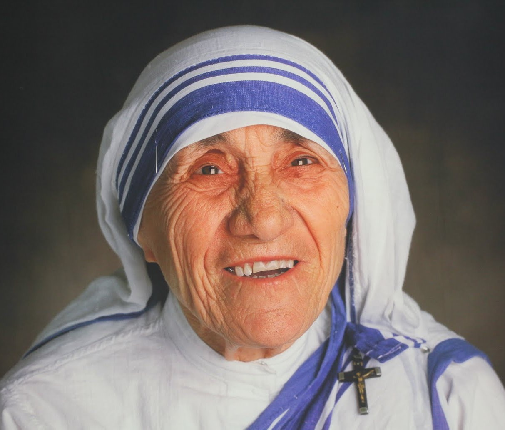

Mother Teresa
Canonised As Saint
(1910 - 1997)
In this life we cannot do great things. We can only do small things with great love.
Biography of Teresa
Free Code Camp Project
Mother Teresa, the Roman Catholic nun who worked with the poor in the Indian city of Kolkata (Calcutta), is being declared a saint.
The order she founded, the Missionaries of Charity, has grown to include 4,500 nuns and 400 brothers in 87 countries, tending to the poor and dying in the slums of 160 cities.
She decided as early as 12 that she wanted to become a missionary in India.
-

- 1910 - Mother Teresa was born in Macedonia. She was named Agnes, and she later changed her name to Teresa.
- 1928 - At the age of 18, Agnes decided to dedicate herself to God's work. She became a nun and changed her name to Teresa.
- 1931 - Teresa was called Sister Teresa when she first began working at St. Mary's High School in Calcutta, India.
- 1937 - She became Mother Teresa when she made her Profession of the Vows. She promised to be the "Spouse of Jesus for eternity".
- 1944 - In 1944 Mother Teresa became the principal of St. Mary's.
- 1948 - After seeing the poor people on the streets outside of St. Mary's, Mother Teresa asked the church leaders if she could help them. She left the school so she could minister to the poor of Calcutta.
- 1957 - Mother Teresa had a heart for the destitute, and especially for children. This led her to open her first orphanage in India.
- 1969 - Mother Teresa worked for years with the poor. When she noticed they had no hospitals or clinics, she began working to give them medical treatment, which led to the establishment of Missionaries of Charities.
- 1979 - Received Nobel Peace Prize
- 1980 - Mother Teresa was awarded many honors for her works, included the Nobel Peace Prize in 1979. Other awards were the Medal of Freedom and the Order of Merit from Queen Elizabeth.
- 1985 - One of Mother Teresa's most notable works was the establishment of a center for people with AIDS.
- 1990 - Other missionaries flocked to work with Mother Teresa. Soon she had missionaries continuing her work in over 40 countries.
- 1997 - Mother Teresa continued her work even as she grew older and frail. By this time she had over 4000 workers in over 120 countries.
- 1997 - Mother Teresa returned to Calcutta, India, for the last few weeks of her life. The world mourned for her when she passed.
- 2016 - Was canonised as a saint on 4 of September